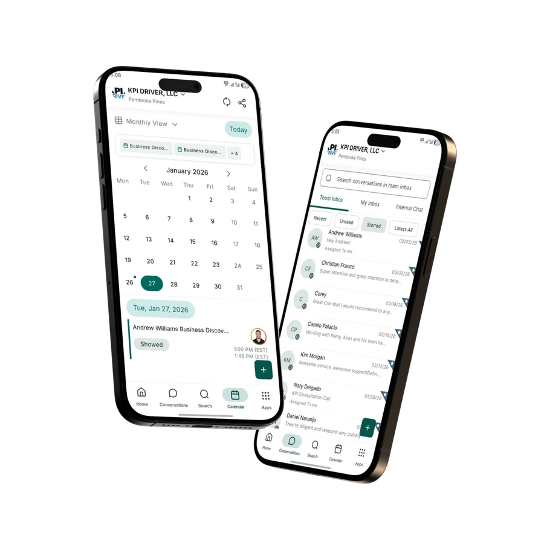

CRM Base de la Enterprise Optimization Suite
El motor de tu operación.
Un CRM creado por inversionistas inmobiliarios que cubre todo el negocio: cada lead, cada trato, cada trabajo de proveedor y cada renta, con los números para gestionarlos.
Pipelines operativos conectados
Cada equipo tiene su propio pipeline. El trato sigue siendo un solo registro.
Mientras la mayoría de los CRM inmobiliarios se quedan en la gestión de leads y las adquisiciones, KPI DRIVER lleva el trato por cada traspaso.
Tus pipelines se configuran según cómo opera tu negocio. Las rutas mostradas son ejemplos comunes, no una secuencia fija.
Lo que maneja el CRM
El trabajo diario, en un solo sistema.
Leads y contactos
Cada lead de formularios, campañas, llamadas, SMS, correo y redes en una sola vista, asignado a la persona correcta y con su historial completo.
Flujos de trabajo y automatizaciones
Flujos, disparadores y alertas que hacen avanzar el trabajo y le quitan a tu equipo el seguimiento repetitivo.
Herramientas de comunicación
Mensajería bidireccional, llamadas, campañas de correo y SMS, chat web y gestión de reseñas, conectados al registro del contacto.
Nurture como respaldo
Campañas de corto y largo plazo trabajan los leads que tus gerentes de adquisiciones no alcanzan a atender, y luego les devuelven los vendedores revividos para cerrar. Todos los nurtures funcionan en inglés y español.
Documentos y tareas
Agenda de citas, gestión de tareas y firma de documentos integrada, con cada contrato ligado a su trato.
Herramientas de generación de leads
Campañas de correo y SMS, embudos y herramientas de prospección para el lado de marketing del negocio.
Visibilidad de KPIs
El tablero es el punto.
El tablero de KPIs viene prediseñado con lo que importa en la inversión inmobiliaria: adquisiciones, desempeño de marketing, velocidad de los tratos y más. Si necesitas otra vista, la ajustamos contigo.
- Ve el desempeño de cada pipeline en un solo tablero
- Detecta a tiempo las áreas de bajo desempeño
- Compara mes a mes
- Sigue las fuentes de leads hasta los tratos

Acceso móvil
Maneja el negocio desde cualquier lugar.
La app móvil para iOS y Android pone el CRM y tus conversaciones en tu bolsillo. Responde a un lead, revisa una tarea o actualiza un trato durante la visita a una propiedad.
Integraciones
KPI DRIVER trabaja junto con sistemas telefónicos, herramientas de marketing y otras plataformas de terceros. Las integraciones se definen con nuestro equipo técnico, que se encarga de la configuración para que la información llegue a un solo lugar.
CRM + AI Suite Acceso incluido
El motor funciona por sí solo. La AI Suite es el nitro.
El CRM nunca se vende como un nivel sin acceso a la AI Suite. Cada Enterprise Optimization Suite incluye ambos, y las herramientas de IA están ahí cuando la tarea lo pide.
Después de una llamada
AI Notes Taker escribe notas estructuradas y actualiza el registro del CRM. AI Sales Coach califica la conversación.
Antes de una oferta
AI Underwriting, AI Skiptracing y AI Data Enrichment agregan información de la propiedad y de contacto al trato que estás trabajando.
En la revisión mensual
AI Dashboard, AI Insights y AI Projections se apoyan en los KPIs que tus pipelines ya generan.
Implementación y soporte
Configurado contigo, no solo entregado.
Los equipos nuevos empiezan con una configuración ágil. Los equipos establecidos traen sus datos y su forma de trabajar.
Migración
Trasladamos los datos de tu CRM cuidando su integridad. El plan depende de tu sistema actual.
Onboarding
Un gerente de cuenta dedicado dirige el onboarding y las sesiones de estrategia.
Capacitación y soporte
Cada cliente tiene un canal dedicado con nuestro equipo. Sin tickets, sin bots, y los cambios de rutina se hacen sin costo adicional. Los recorridos grabados en la AI Suite cubren el sistema cuando los necesites.
¿El CRM se vende por separado?
El CRM es la base de la Enterprise Optimization Suite, que también te da acceso a la AI Suite. Tú decides si usas las herramientas de IA de pago por uso.
¿Qué pipelines vienen integrados?
Nurture, Adquisiciones, Disposiciones, Coordinación de transacciones, Contratistas y proveedores, y Propiedades y rentas. Cada uno funciona en su propio pipeline y reporta al mismo seguimiento de KPIs.
¿El tablero de KPIs se puede personalizar?
El tablero de KPIs viene prediseñado con las métricas que importan en la inversión inmobiliaria, como adquisiciones, desempeño de marketing y velocidad de los tratos. Si necesitas algo distinto, lo ajustamos contigo.
¿Mi equipo puede trabajar desde el teléfono?
Sí. Una app móvil para iOS y Android le da a tu equipo acceso al CRM, las conversaciones y las tareas fuera del escritorio.
¿Pueden migrar mi CRM actual?
Sí. La migración del CRM es parte del onboarding, cuidando que tus datos lleguen completos. El plan y los tiempos dependen de tu sistema y tus datos actuales, por eso primero definimos el alcance contigo.
¿Cómo se relaciona la AI Suite con el CRM?
La AI Suite es una plataforma complementaria que se entrega junto con el CRM. Agrega captura de llamadas y coaching, underwriting, skiptracing, enriquecimiento de datos, tableros, insights y proyecciones sobre la operación que tu CRM ya maneja.
¿Y si necesito un cambio en mi configuración?
Escríbenos en tu canal dedicado. Los cambios y ajustes de rutina se hacen sin costo adicional. Si una solicitud es considerable, enviamos una cotización antes de empezar.
Haz el cambio de marcha.
En una llamada de descubrimiento revisamos tu operación, recorremos el CRM y la AI Suite, y hablamos de encaje y precios.